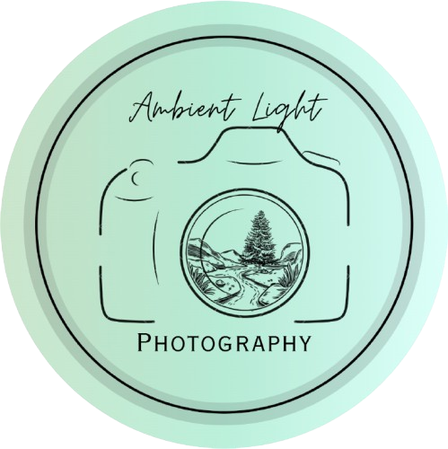

Capturing light, emotion and nature.

I’m a Swiss photographer based in Bern, capturing moments through my lens as a passion and hobby. I especially enjoy photographing during hikes, focusing on landscapes, forests, nature, and wildlife. Being outdoors inspires my work and helps me see beauty in simple scenes. I’m always open to exploring new subjects and capturing a wide range of moments.
A picture says more than a thousand words. Photography has the power to express emotions, stories, and moments in a way words often cannot. Through my work, I want to capture meaningful scenes from nature and life. My goal is to inspire as many people as possible with my images.